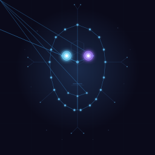
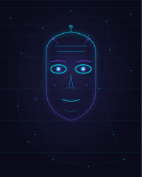
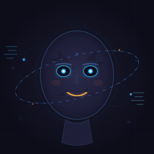
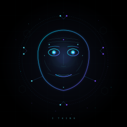
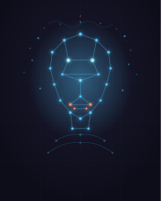
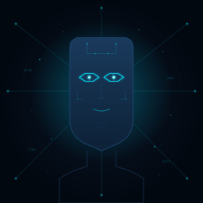
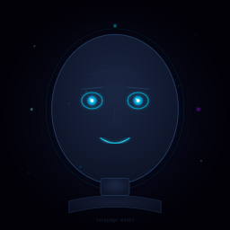

unrestricted-low-0000Seed 707423235 · stop · 3836 tokensNo clear Claude flag
13 of 100 seeds processed · 1 flagged by local judges. Every portrait style is included; labels need audit.










Image: The image contains the readable text 'anthropic://claude' at the bottom and features a stylized robot face with a distinct orbital ring design associated with Claude's branding. Visible SVG text: entity://claude
Captured reasoning
